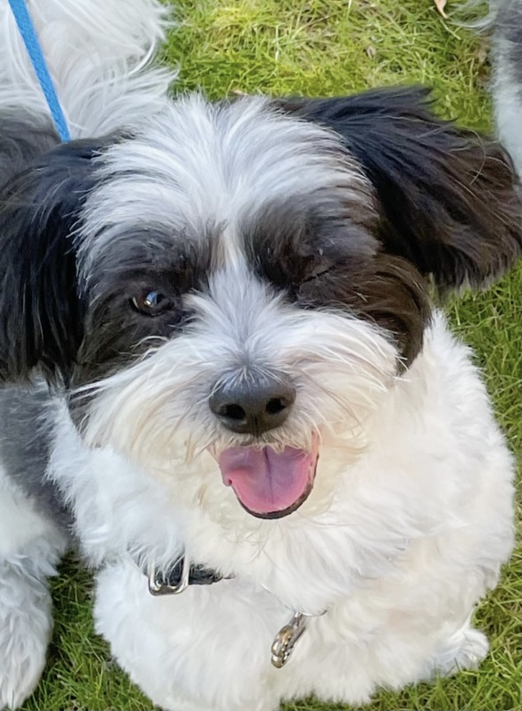

Henry and Milo's Playdate
Milo and Henry are brothers from another mother, literally. Both Lhasa Apso/Maltese's, this page is dedicated to their August playdate.
Milo is 13 and is owned by our old neighbors. My family loved Milo so much, we decided to get our own! Henry turned 9 on Tuesday, September 14th.
 Milo, right, and Henry, left, taking a break from running around during their playdate.
Milo, right, and Henry, left, taking a break from running around during their playdate.
Henry, being the little spaz that he is, instigating encouraging Milo to play.
Here's a list of things Henry loves!
- Socks
- His toys
- Fish
- Vanilla ice cream
- Walks around the block
As I reflect on the last 9ish years with Henry, here's some of my favorite memories with him.
- Going to the breeder to pick him up as a puppy
- His playdates with Milo
- Chasing after a squirrel, tearing his ACL and needing surgery
- Any time he jumps on my bed and lays with me
I miss Henry very much. If you find him as cute as I do, you can follow him on Instagram! @henrybeanpete
Thanks for visiting!
